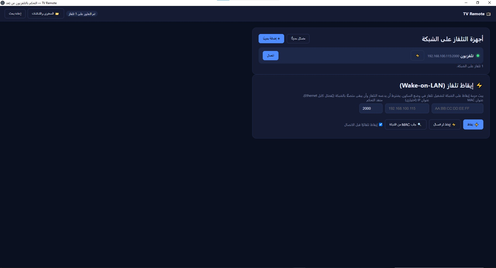
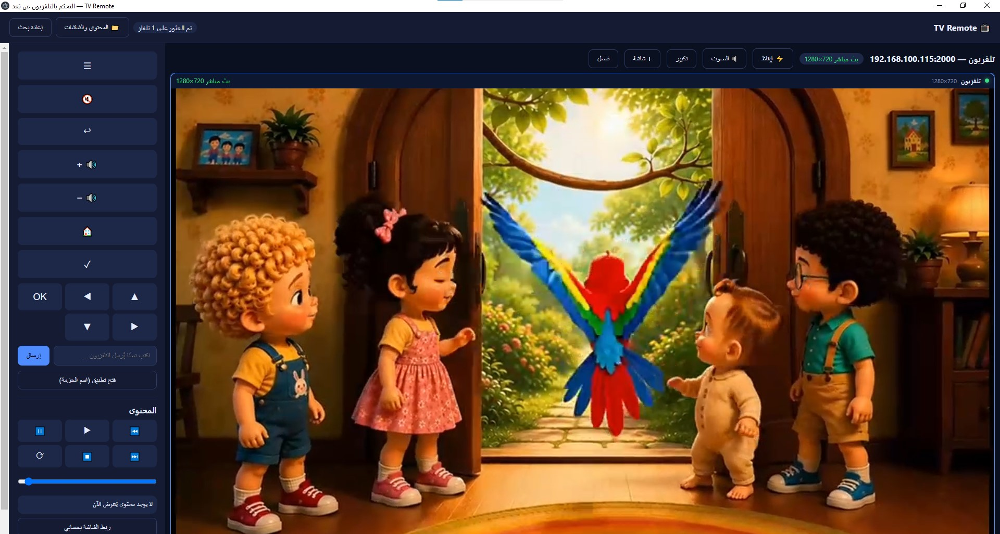
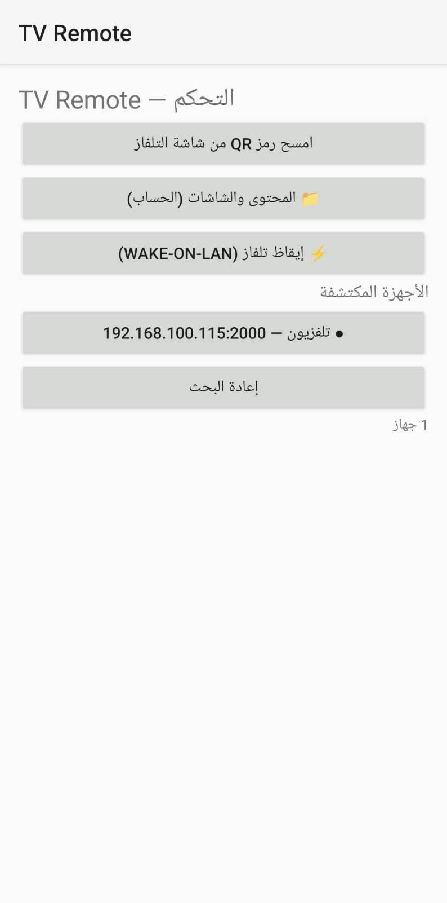
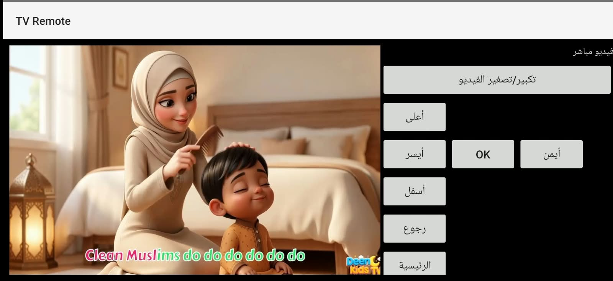
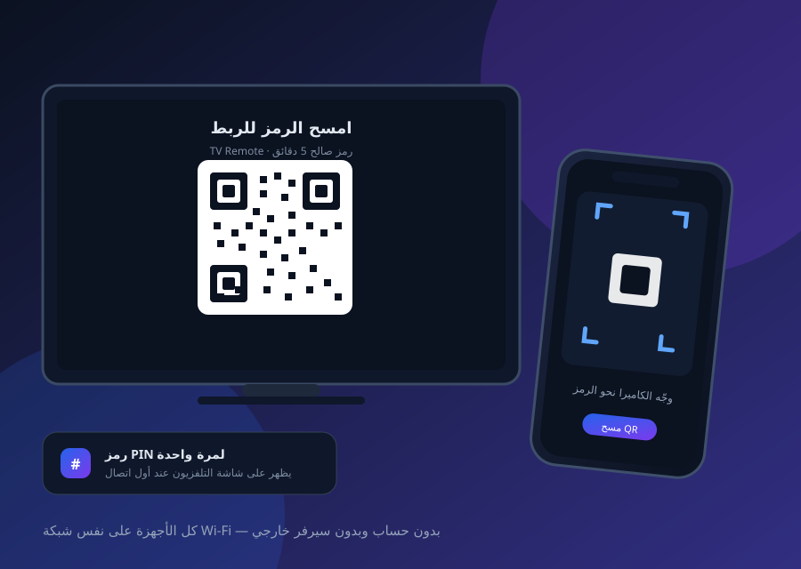

بث حي لشاشة التلفزيون
تشاهد شاشة التلفزيون على جوالك أو كمبيوترك لحظياً، وتتابع ما يعرضه الأطفال أو الضيوف دون مغادرة مكانك.
TV Remote يبث شاشة التلفزيون مباشرة إلى الجوال والكمبيوتر، ويمنحك ريموتاً كاملاً باللمس والماوس ولوحة المفاتيح — مع فتح التطبيقات وإيقاظ الشاشة، وتحكّم بأكثر من 5 شاشات على نفس الشبكة (مطاعم وكافيهات وصالات عرض)، عبر شبكة Wi-Fi المحلية بربط آمن QR وPIN وبدون إنترنت.

ريموت كامل + بث للشاشة + تحكم بالماوس ولوحة المفاتيح — في تطبيق واحد للجوال والكمبيوتر.
تشاهد شاشة التلفزيون على جوالك أو كمبيوترك لحظياً، وتتابع ما يعرضه الأطفال أو الضيوف دون مغادرة مكانك.
رجوع، رئيسية، آخر التطبيقات، رفع وخفض الصوت، كتم الصوت، وتبديل التطبيقات — كل أزرار الريموت في شاشة واحدة.
نقر وسحب وضغط مطوّل على شاشة الجوال تُنفَّذ كإيماءات حقيقية داخل أي تطبيق على التلفزيون.
تحكّم بالماوس مباشرة على نافذة البث: نقر، سحب، وعجلة الفأرة للتصفح — كأنك تستخدم مؤشراً على التلفزيون.
اكتب نصوص البحث وكلمات المرور من لوحة مفاتيح الكمبيوتر أو الجوال، بدل التنقل بالأسهم حرفاً بحرف.
قائمة بكل التطبيقات المثبّتة على التلفزيون، تفتح أي تطبيق بضغطة واحدة من الجوال أو الكمبيوتر.
زر واحد يشغّل شاشة التلفزيون من الجوال عندما تكون الشاشة مطفأة والتلفزيون متصل بالشبكة.
رمز QR لمرة واحدة + PIN عند أول اتصال، واتصال مشفّر بين الأجهزة — لا يتحكم أحد في تلفزيونك بدون إذنك.
ثبّت تطبيق التلفزيون على كل شاشة، وستظهر جميعها في قائمة الأجهزة — بدّل بينها بضغطة واحدة على نفس الشبكة (مطاعم وكافيهات وصالات عرض).
ثبّت تطبيق التلفزيون على كل شاشة، وستظهر جميعها في قائمة الأجهزة — اختر الشاشة وتحكم فيها من جوالك أو كمبيوترك.
شاشات القوائم والعروض والطلب (داخل الصالة وخارجها) — بدّل المحتوى وراقب كل شاشة من الجوال دون ريموت لكل تلفزيون.
شاشات القوائم والأسعار والموسيقى البصرية — تحكم موحّد لأكثر من 5 شاشات من جهاز واحد على نفس الشبكة.
شاشات عرض المنتجات والفيديوهات الترويجية — تشغيل وإيقاظ وفتح التطبيقات على كل شاشة عن بُعد.
واجهات الجوال والكمبيوتر وشاشة الربط — بتصميم بسيط وسريع بالعربية.





ثبّت تطبيق التلفزيون مرة واحدة، وبعدها التحكم كله من جوالك أو كمبيوترك.
ثبّت تطبيق التلفزيون وافتحه مرة واحدة، ثم وافق على التقاط الشاشة وخدمة الوصول والظهور فوق التطبيقات.
اختر التلفزيون من الأجهزة المكتشفة تلقائياً أو امسح رمز QR، وأدخل رمز PIN الظاهر على الشاشة مرة واحدة.
استخدم اللمس أو الماوس ولوحة المفاتيح، افتح التطبيقات، واضبط الصوت — مع بث حي لشاشة التلفزيون.
ثلاثة ملفات فقط: تلفزيون + جوال + كمبيوتر. كل الأجهزة على نفس شبكة Wi-Fi.
TV Remote من VAQENO هو برنامج تحكم في التلفزيون عن بُعد لتلفزيونات Android TV وGoogle TV. يبث شاشة التلفزيون مباشرة إلى الجوال أو الكمبيوتر، ويوفّر ريموتاً كاملاً باللمس والماوس ولوحة المفاتيح، مع فتح التطبيقات وإيقاظ الشاشة.
لا. الأجهزة الثلاثة تتصل عبر شبكة Wi-Fi المحلية نفسها، والبث والأوامر تنتقل مباشرة بين الأجهزة بدون سيرفر خارجي وبدون إنترنت.
تطبيق التلفزيون وتطبيق الجوال يعملان على أندرويد 6.0 حتى أندرويد 16 (Android TV وGoogle TV)، وبرنامج الكمبيوتر يعمل على ويندوز 10 و11 بنسخة 64-bit.
اختر التلفزيون من قائمة الأجهزة المكتشفة تلقائياً، أو امسح رمز QR من شاشة التلفزيون. أول اتصال بجهاز جديد يطلب رمز PIN الظاهر على شاشة التلفزيون مرة واحدة فقط.
نعم. برنامج الكمبيوتر يعرض شاشة التلفزيون مباشرة، ويتيح التحكم بالماوس (نقر وسحب وسكرول) ولوحة المفاتيح الفيزيائية، إضافة إلى أزرار الريموت وفتح التطبيقات.
نعم. التطبيقات موقّعة بمفتاح خاص، ولا يمكن لأي جهاز على الشبكة التحكم أو إيقاظ الشاشة إلا بعد إدخال رمز PIN الصحيح أو امتلاك مفتاح اقتران سابق، والاتصال مشفّر، والنسخ الاحتياطي لبيانات التطبيق معطّل.
التطبيقات المحمية بحقوق رقمية (DRM) مثل Netflix وPrime Video وYouTube Premium تمنع نظام أندرويد من التقاط شاشتها، فتظهر سوداء. هذا قيد نظامي في كل تطبيقات البث وليس خللاً في TV Remote، وباقي التطبيقات والإعدادات تُبث بشكل طبيعي.
نعم، زر إيقاظ شاشة التلفزيون يشغّل الشاشة من الجوال بشرط بقاء التلفزيون متصلاً بالشبكة أثناء السكون. إذا كان يقطع الواي فاي عند إطفاء الشاشة ففعّل خيار Wake on Wi-Fi في إعدادات التلفزيون أو استخدم كابل Ethernet.
نعم، يمكن ربط أكثر من 5 شاشات على نفس شبكة Wi-Fi. ثبّت تطبيق التلفزيون على كل شاشة، وستظهر جميعها في قائمة الأجهزة، وتختار الشاشة التي تريد التحكم فيها من الجوال أو الكمبيوتر.
نعم، صُمّم للتحكم في عدة شاشات على نفس الشبكة: شاشات قوائم وعروض وترويجات في المطاعم والكافيهات وصالات العرض، مع إمكانية تشغيل وإيقاظ وفتح التطبيقات على كل شاشة عن بُعد.
نصمّم ونطوّر برامج وتطبيقات مخصصة لمنشأتك — من الفكرة إلى التسليم والدعم.